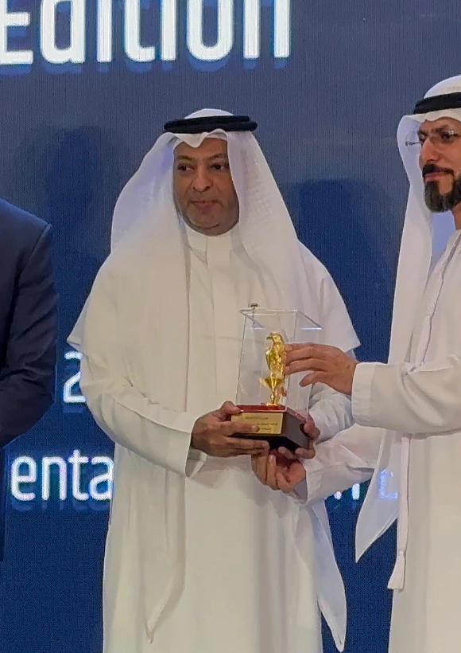

International Chamber of Commerce (ICC), Paris
Vice-Chair · Executive Board MemberThe world's largest business organisation, representing more than 45 million companies in over 170 countries. Re-elected Vice-Chair in 2020.
For three decades, A'amal Group and our Founder & CEO, Yassin Al Suroor, have represented Saudi business in the world's leading economic forums — from the International Chamber of Commerce to the G20.


Yassin Al Suroor's roles in the organisations that shape global trade and investment.
The world's largest business organisation, representing more than 45 million companies in over 170 countries. Re-elected Vice-Chair in 2020.
Leading the Saudi national committee of the ICC and representing the Kingdom's business community within the global ICC network.
Connecting a network of more than 3,000 chambers of commerce in over 100 countries.
The official G20 dialogue with the global business community during the Kingdom's G20 Presidency.
Appointed to the B20's high-level advocacy caucus for Indonesia's G20 Presidency.
Continuing to represent global business priorities to G20 leaders, through Brazil and South Africa.
Strengthening trade and investment ties between the Arab world, Belgium and Luxembourg.
Supporting business-led initiatives that promote peace and prosperity.
Celebrating and developing role models who inspire the next generation.

Committed to the Compact's ten principles on human rights, labour, environment and anti-corruption.
Recognised twice at the G2T Awards for leadership and business excellence.